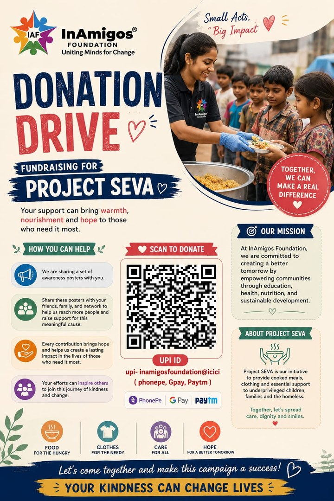

01 / SEVA
Food, clothing and basic support.
Project SEVA focuses on immediate needs, including food and clothing distribution for underprivileged communities. The foundation reports more than 50,000 meals and clothing distributions through its work.
Focus
Food & clothing
Food & clothing
Purpose
Immediate relief
Immediate relief